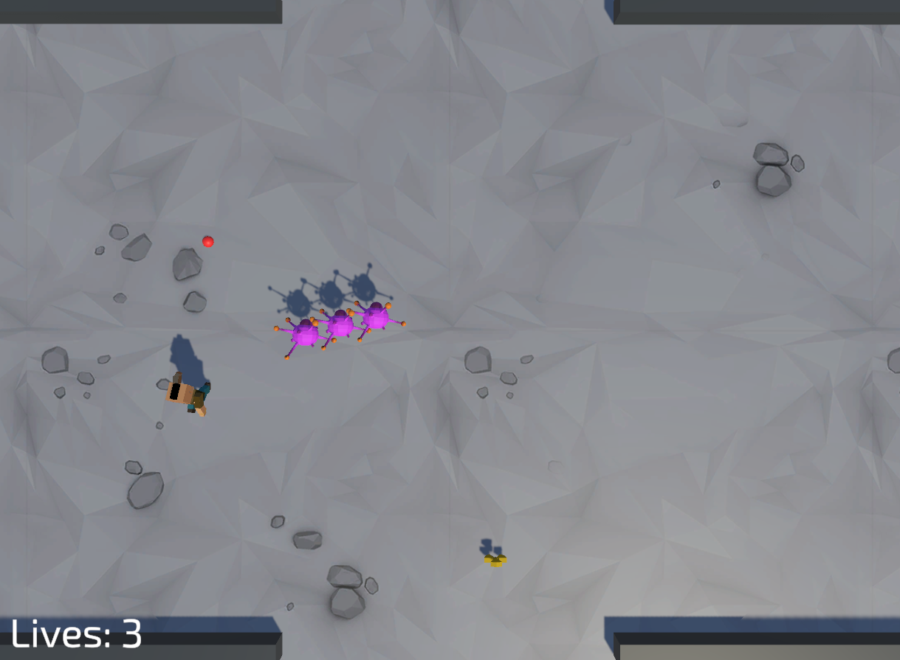

My Projects
I have some minor experience doing some very small game dev projects for fun. Here's what I've made!
Untitled Top-Down Shooter Game
I taught myself how to code in C# using Unity's Unity Learn program, which is a self-guided free tutorial for everything Unity. I had a lot of fun just messing around and trying to get things to work, and that's when I realized that making games and coding is what I want to do! Here's a picture of one of the small games I made.
So far, this is the only game I've put a lot of work into. It's a top-down shooter where you run around trying to destroy weird pink aliens. I made it so that when you get hit, you become invincible for about 3 seconds, and if you pick up one of the power-ups (yellow thing near the bottom-middle) you can run into the enemies and explode them as you please super-Mario style. One of the more advanced things I had to make was an if-else loop that checks how many waves of enemies you have defeated, and to spawn a harder wave depending on that. Here's the code below:
void Update()
{
enemyCount = FindObjectsOfType[Enemy]().Length;
if (enemyCount == 0)
{
waveNumber++;
Instantiate(powerupPrefab, GeneratePowerupPosition(), powerupPrefab.transform.rotation);
SpawnEnemyNorth(waveNumber);
if (waveNumber > 3)
{
SpawnEnemySouth(waveNumber);
}
if (waveNumber > 6)
{
SpawnEnemyEast(waveNumber);
}
if (waveNumber > 9)
{
SpawnEnemyWest(waveNumber);
}
}
}
For my first somewhat big project, I've had a lot of trouble. I still haven't figured out how to get the aliens to stop spastically spinning around because their animation is broken. However, I had a ton of fun just making this for practice, and I can't wait to get the opportunity to make some more. Stay tuned!